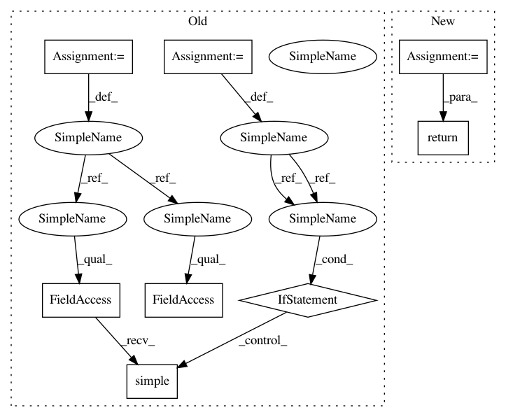

a583300c421eb31041883e2775280810f1e853ba,nilmtk/elecmeter.py,ElecMeter,good_sections,#ElecMeter#,456
Before Change
if `full_results` is True then return nilmtk.stats.GoodSectionsResults
object otherwise return list of TimeFrame objects.
full_results = loader_kwargs.pop("full_results", False)
loader_kwargs["n_look_ahead_rows"] = 10
source_node = self.get_source_node(**loader_kwargs)
good_sections = GoodSections(source_node)
good_sections.run()
if full_results:
return good_sections.results
else:
return good_sections.results.simple()
def key_for_cached_stat(self, stat_name):
return ("building{:d}/elec/cache/meter{:d}/{:s}"
.format(self.building(), self.instance(), stat_name))
After Change
object otherwise return list of TimeFrame objects.
loader_kwargs["n_look_ahead_rows"] = 10
nodes = [GoodSections]
return self._compute_stat(nodes, loader_kwargs)
def _compute_stat(self, nodes, loader_kwargs):
General function for computing statistics.
In pattern: SUPERPATTERN
Frequency: 3
Non-data size: 8
Instances
Project Name: nilmtk/nilmtk
Commit Name: a583300c421eb31041883e2775280810f1e853ba
Time: 2014-11-25
Author: jack-list@xlk.org.uk
File Name: nilmtk/elecmeter.py
Class Name: ElecMeter
Method Name: good_sections
Project Name: nilmtk/nilmtk
Commit Name: a583300c421eb31041883e2775280810f1e853ba
Time: 2014-11-25
Author: jack-list@xlk.org.uk
File Name: nilmtk/elecmeter.py
Class Name: ElecMeter
Method Name: good_sections
Project Name: nilmtk/nilmtk
Commit Name: 39f91522c829f1b680891750974570677ea5ea95
Time: 2014-11-25
Author: jack-list@xlk.org.uk
File Name: nilmtk/elecmeter.py
Class Name: ElecMeter
Method Name: good_sections
Project Name: nilmtk/nilmtk
Commit Name: 727196fda06a4c79354ad7f181c279ef78022e55
Time: 2014-11-25
Author: jack-list@xlk.org.uk
File Name: nilmtk/elecmeter.py
Class Name: ElecMeter
Method Name: dropout_rate